Agent Auto System puts everyday online tasks on autopilot — filling forms, gathering leads, summarizing news, scraping sites — then automatically double-checks, scores, and prices every result. You get an answer you can trust, without babysitting the run.
You send one request and the system does the rest. A fast web layer replies instantly and runs your task in the background, while a shared "harness" layer quietly handles everything tricky — picking the AI, retrying, scoring, and tracking cost — so the task code stays simple.
POST /api/jobs/{id}/run creates a run and returns 202, then runs the flow in an asyncio.create_task.DATABASE_URL for prod.The API returns 202 immediately; flows run in a registered asyncio task so any run can be cancelled mid-flight.
/stream polls the DB every 0.5 s; append_log uses json_insert to append atomically — no read-modify-write.
@CrewBaseThe decorator's id(self) memoize serves stale LLMs after GC reuses addresses. Crews are plain classes, rebuilt each run.
normalize() picks (provider, model) with no API call; resolve() builds the LLM only when a crew needs it.
reconcile_stale_runs() marks orphaned running/pending rows as failed on every boot.
SQLite for a single node; point DATABASE_URL at Postgres for production — same code, same migrations.
One layer sits between the app and the AI and handles everything repetitive and error-prone — choosing the model, retrying on failure, scoring the result, and adding up the cost — so the rest of the code stays clean. Six jobs, one tidy seam.
Choose OpenAI, Anthropic Claude, or Google Gemini right from the screen. normalize() resolves the model without an API call; resolve() builds the crew's LLM at a task-specific temperature.
A validator checks every result. If it fails, the system re-runs the task with the previous error handed back to the AI — so it corrects itself on the next attempt.
If one model is briefly down (503, 429, timeouts), the system quietly tries a sibling model with backoff — up to 5 attempts. Real errors stop right away.
A separate AI scores each result from 0–100 with a confidence level — never the same model that produced it. Per-task rubrics ground the score; a simple fallback keeps it honest.
Every run records the provider, model, tokens in/out, retry count, quality score, and estimated cost in USD. /api/stats adds it all up in a single database pass.
Watch progress update every half-second, check a rich /health endpoint, and turn on optional per-run Langfuse traces — all of which fail softly and never break a run.
From grabbing a single web page to a multi-step workflow that chains several tasks together. Every AI-powered task lets you pick the provider, the model, and how many retries to allow.
AI reads a form and submits it for you.
Turns a web page into a tidy summary — title, key points, links.
Reads a public Google Sheet into columns, stats, and insights.
Collects the sellers behind top Shopee products.
A 4-agent crew validates, corrects, and analyzes your CSVs → PDF.
Collects recent posts from a public X (Twitter) profile.
Reads the top HN stories into a themed summary.
Finds leads: discover → scrape → verify → dedupe → AI qualifies.
Logs in and proposes to open cases with an AI-written pitch.
Sends mail via Gmail — no AI required.
Chains any tasks together; later steps read {{steps.N.result}}.
Add a new task type by touching just 6 files.
The moment you hit run, you get confirmation the work has started — then you watch each step happen live, from the first click to the final score.
POST /api/jobs stores your inputs; /run starts a background task and confirms instantly.
The system settles on the provider/model and hands the task to the right workflow.
The AI crew runs its tools and produces structured data. A brief outage falls back to another model.
A rule checks the result. If it's off and retries remain, the task re-runs with the error explained.
A separate AI grades quality 0–100. It's purely for your information — it never overrides success.
Tokens, cost, retries, and the score are saved in one write; the final status streams straight to your screen.
A clean, browser-based dashboard: pick a task, watch it run live, browse past runs, check usage and cost, and manage your team — all behind a login.
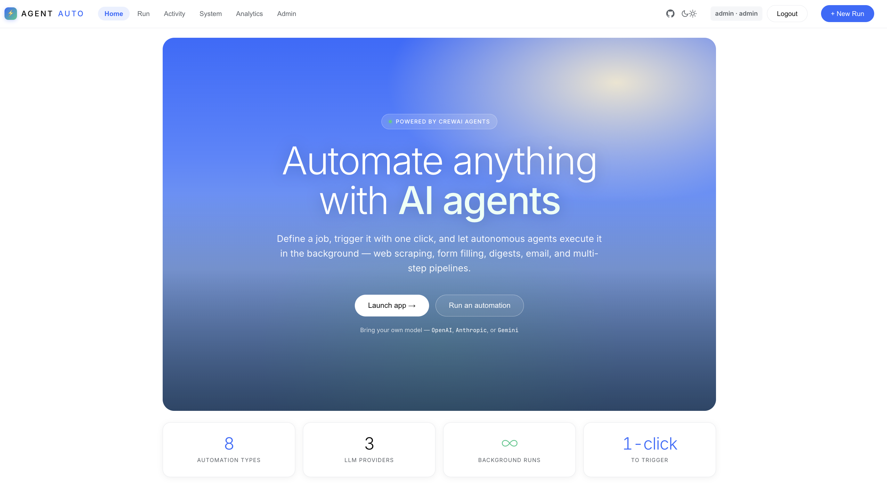
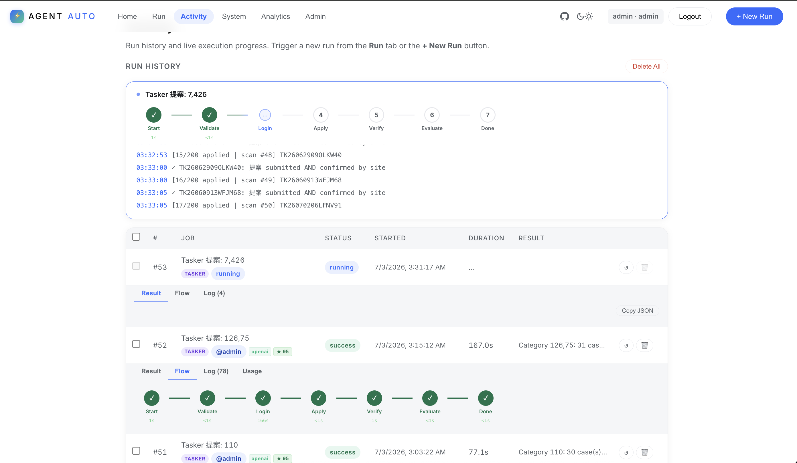
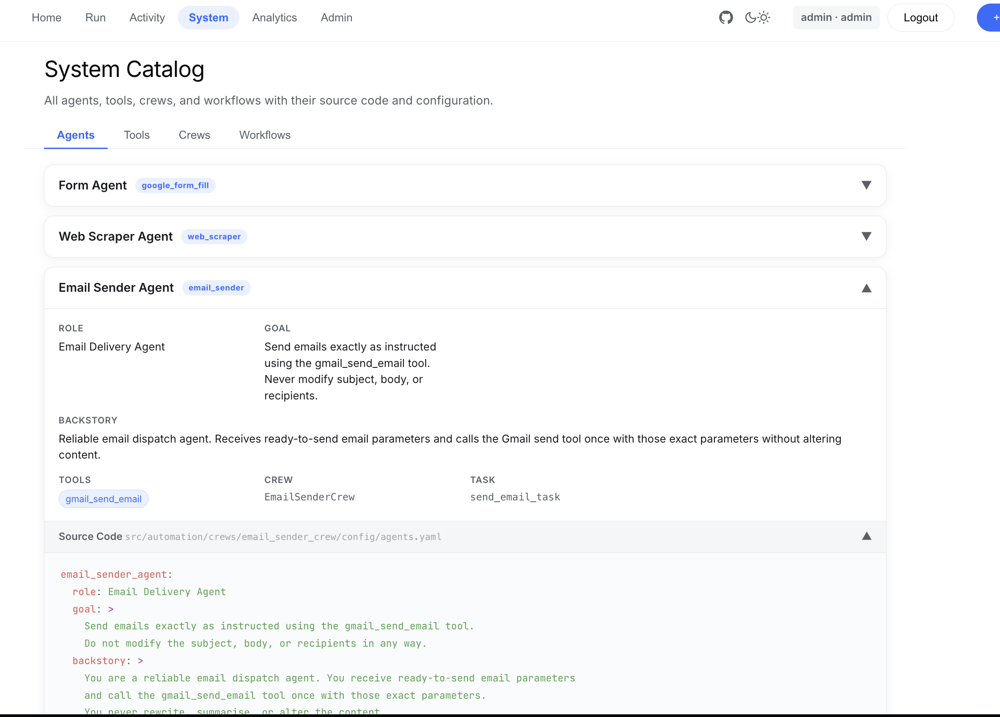
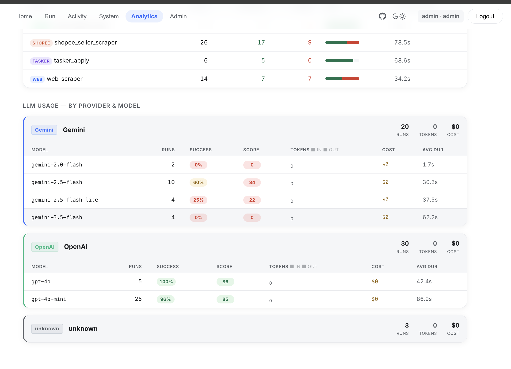
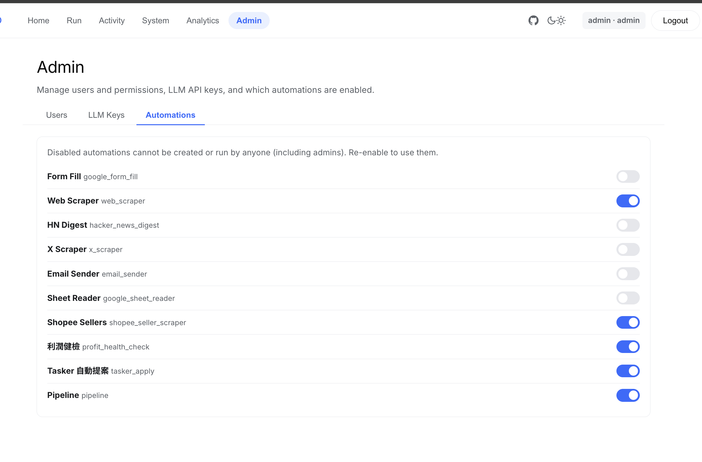
Download it, add a single AI key, and run a real automation in a few minutes — then learn to schedule, track, and administer it. Every step below uses real screenshots of the running app.
Dependencies are managed with uv. The Playwright step is only needed for browser-driven tasks (form fill, Shopee, X, Tasker, email collector).
$ git clone https://github.com/yennanliu/agent_auto_system $ cd agent_auto_system $ uv sync # install deps $ uv run playwright install chromium # for browser jobs
Copy the sample settings file and fill in an OPENAI_API_KEY, ANTHROPIC_API_KEY, or GEMINI_API_KEY — any one is enough to start. Keys can also be stored (encrypted) later from the Admin page.
$ cp .env.example .env $ # edit .env → set OPENAI_API_KEY=sk-… (or ANTHROPIC / GEMINI)
Run the app and open it in your browser. Running the tests is a good first sanity check.
$ uv run uvicorn src.main:app --reload --port 8000 $ open http://localhost:8000
The app requires a login. On first startup an admin account is created for you — sign in with admin / admin.
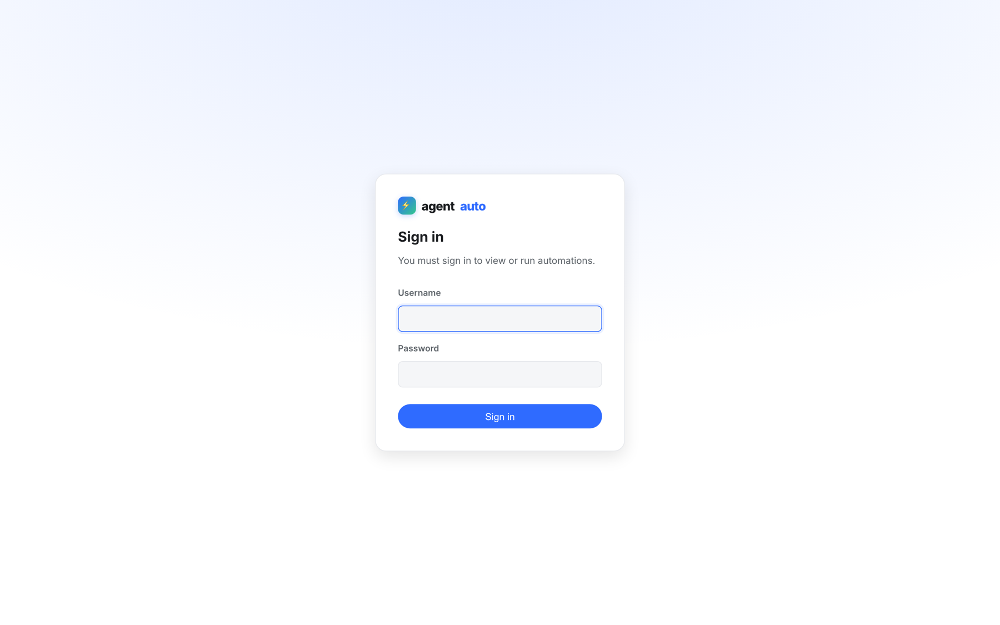
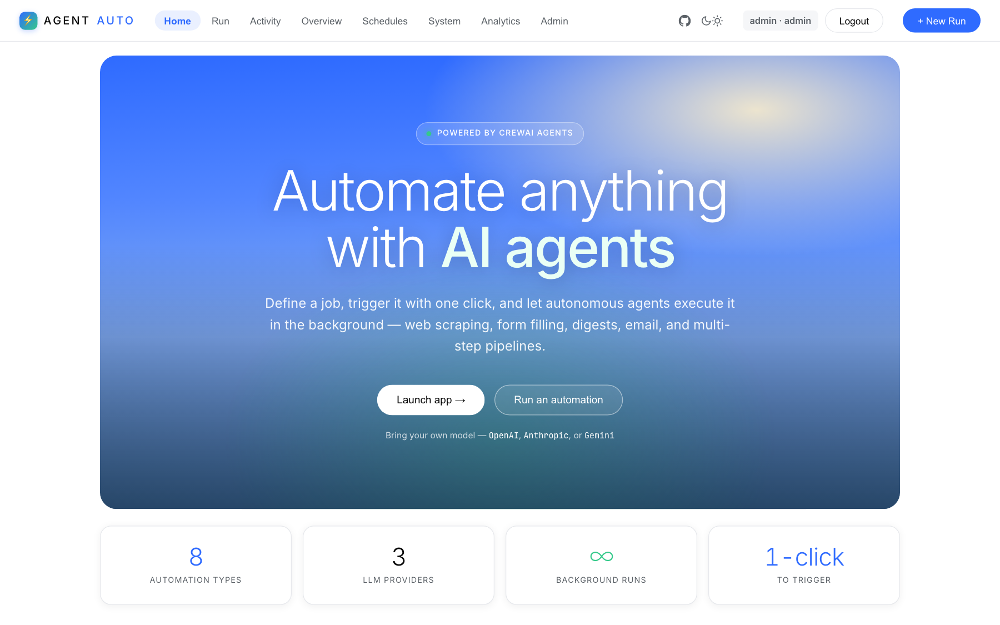
We'll run the Hacker News Digest — no external accounts needed, just an AI key. It reads the top HN stories and returns a themed, structured summary.
The picker lists every built-in task type. Choose HN Digest. Each tile swaps in its own form below.
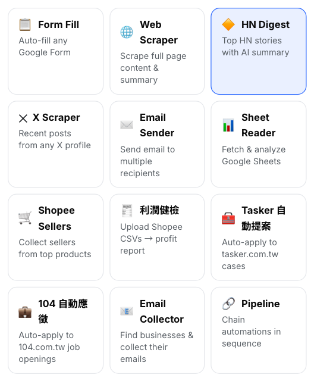
Set Number of Stories to 5, then pick a provider and model. This demo uses OpenAI · gpt-4o-mini — fast and cheap. Each task carries its own temperature under the hood.
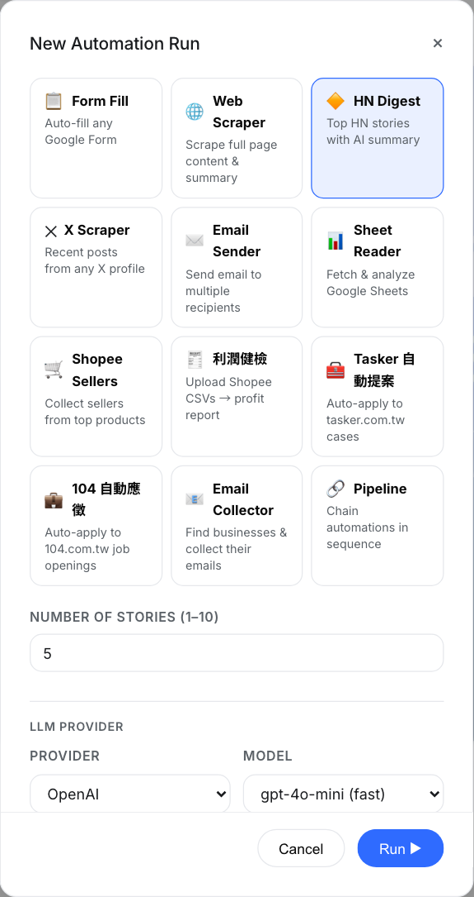
Hit Run ▶ and you land on Activity. A half-second SSE stream lights up the step graph in order — Start → Validate → Fetch → Digest → Verify → Evaluate → Done — and appends log lines as they happen. Each node turns green as it completes and shows how long it took.
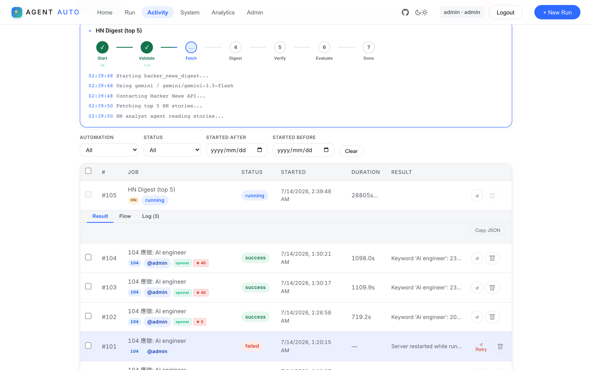
When the run finishes, click the row to expand it. The Result tab holds the structured JSON; Flow shows the step timeline, Log the full stream, and Usage the model, tokens, and estimated cost. Copy JSON lifts the whole result to your clipboard. The green ★ badge is the independent judge's score.
hacker_news_digest on gpt-4o-mini — finished in 21 s, passed validation, and was scored 100/100 by an independent judge model (never the one that wrote the answer).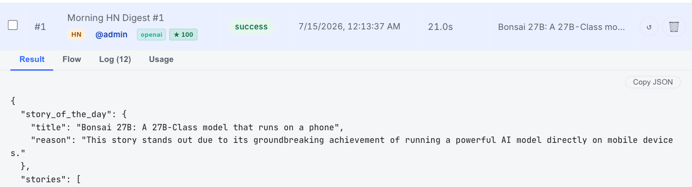
story_of_the_day + per-story fields belowA few runs in, the operational side comes alive: browse history, compare runs at a glance, and put a job on a cron so it runs itself.
The Activity table lists every run with its status, who ran it, the provider, a ★ quality score, duration, and a result preview. Filter by automation, status, or date. A low score doesn't mean failure — the run still succeeded; the score is your signal to double-check. Any failed run gets a one-click ↺ Retry that hands the previous error back to the AI.
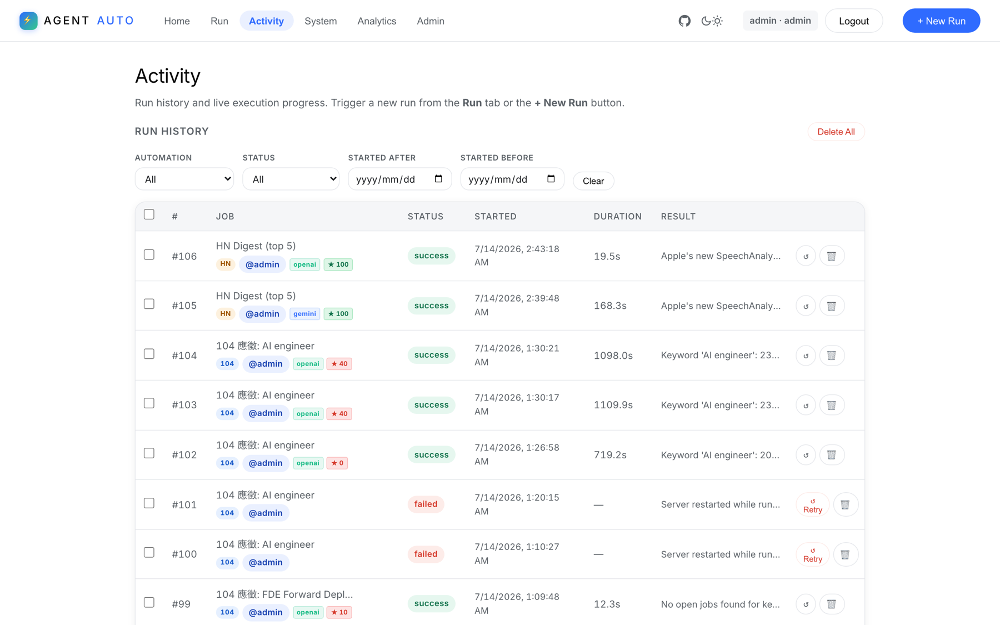
The Overview tab is an Airflow-style grid: pick an automation and every run becomes a column, every step a row. Green is success, red failed, blue running, grey pending. Click any cell to jump to that step's log — perfect for spotting exactly where a run went sideways.
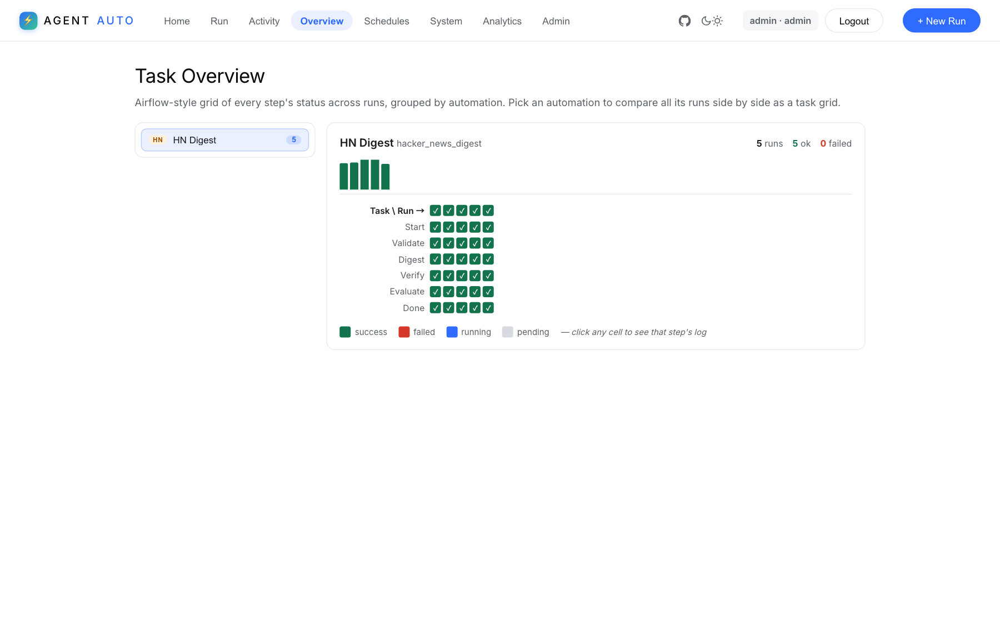
Add a cron expression in the New Run dialog (or the presets dropdown) and the job is saved instead of run once — the built-in scheduler fires it on time, in UTC. The Schedules tab shows each job's cron, next fire time, run count, and last result, with Run now, Edit, and Unschedule controls.
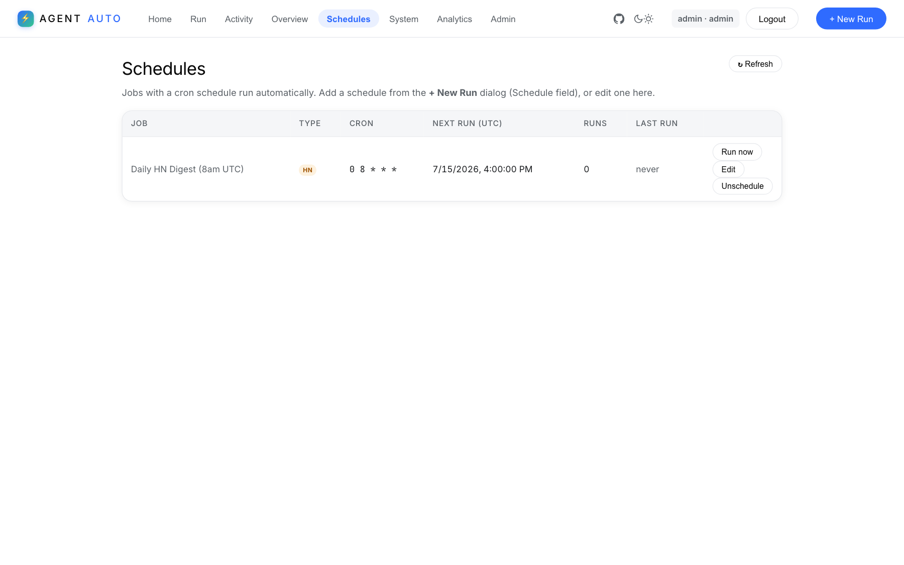
The Admin and System tabs are where you manage people, keys, and which tasks are live — and see exactly how each automation is wired.
Under Admin → Users, add teammates and choose exactly which automations each may run (or make them an admin). Accounts can be disabled, have passwords reset, or be deleted — and the app refuses to remove the last active admin.
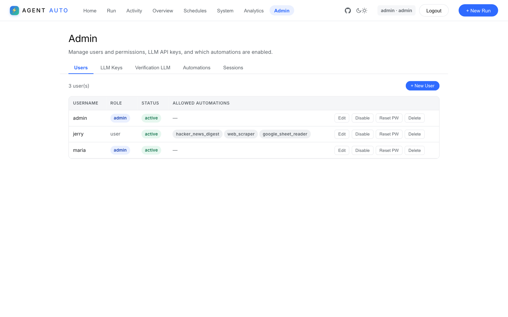
Rather than editing .env, paste provider keys under Admin → LLM Keys. They're stored Fernet-encrypted and only decrypted at run time, overriding the environment. Each provider shows a configured / not set badge, whether the value came from env, and a masked preview.
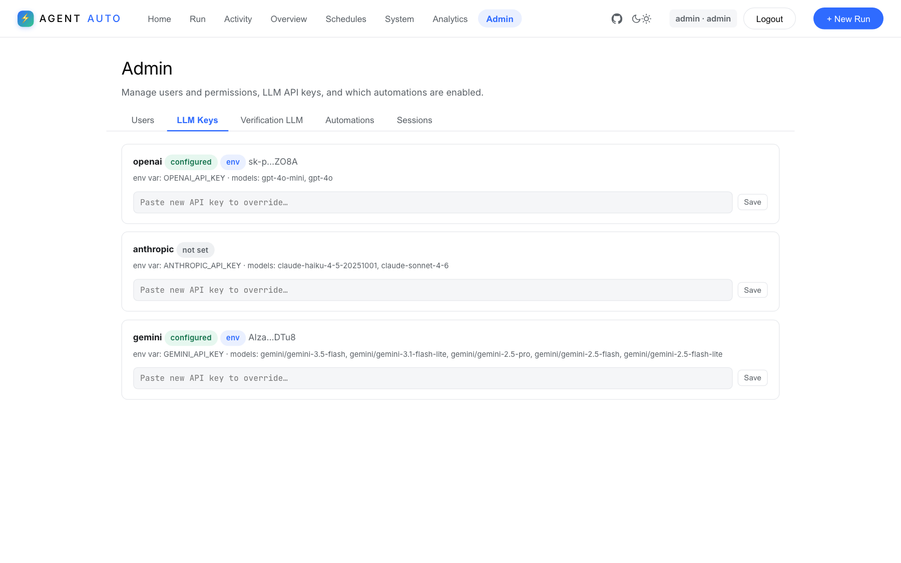
The Automations tab is the master switch: a disabled task can't be created or run by anyone, admins included. Under Verification LLM you choose the independent judge model — kept separate from the models that produce results, so scores stay honest.
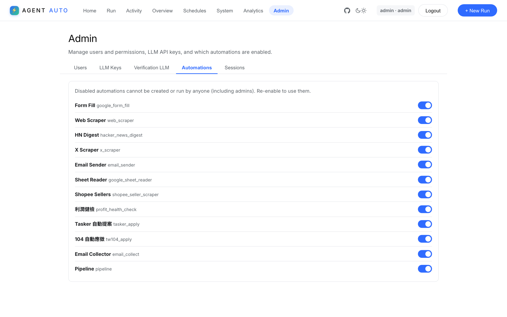
The System tab exposes every agent, tool, crew, and workflow — roles, goals, backstories, and the real source config — so you can see how an automation is built without reading the repo. The Analytics tab totals runs, success rate, average score, tokens, and estimated cost, plus an eval-trust panel (independent-judge rate, retry/fallback rate, validation pass).
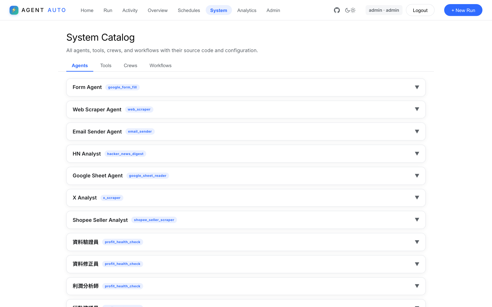
docker compose up --build -d, then open http://localhost:7000. See the repo's Docker quick start and AWS ECS Fargate guide.How the system was designed and built, from architecture to frontend and pipeline orchestration — by the YennJ12 Engineering Team (in Traditional Chinese).
The 11 task types and how the platform runs.
Cross-model fallback, self-correcting retries, AI-as-judge.
Shopee, Google Maps leads, and Tasker auto-apply.
Langfuse observability, slim Docker, and AWS deployment.
The half-second live stream and multi-step task chaining.
Bring one AI key, install with a couple of commands, and open the dashboard. Container and AWS cloud setups are documented end to end.